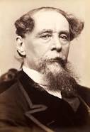

Charles Dickens
(7 Şubat 1812 – 9 Haziran 1870) İngiliz yazar ve toplumsal eleleştirmen. En unutulmaz kurgusal karakterlerden bazılarını yaratmasının yanında Victoria devrinin en iyi romancısı olarak kabul edilir. Yaşadığı sürede eserleri benzeri görülmemiş bir üne sahip oldu ve yirminci yüzyılda edebi dehası eleştirmenler ve ilgili kişiler tarafından kabul gördü. Romanları ve kısa öyküleri dünya çağında tanınmaya devam ediyor.
İngiltere'nin Portsmouth şehrinde doğan Dickens babasının borçları yüzünden hapisaneye düşmesi sonrasında fabrikada çalışabilmek için okuldan ayrıldı. Düzgün bir eğitim almamış olsa da erkenden yoksullaşması ona başarıya giden yolda yardım etti. Kariyeri boyunca 20 yıllık bir süre içerisinde haftalık olarak çıkan bir gazeteyi yönetti, 15 roman, 5 uzun öykü, yüzlerce kısa öykü ve kurgu dışı makale yayınlayıp yorulmak nedir bilmeden çalıştı ve çocuk hakları, eğitim ve diğer toplumsal konularda yenilikler için mücadele verdi.
1836'da yayınlanan The Pickwick Papers romanı ile şöhrete kavuştu. Birkaç yıl içerisinde uluslararası tanınan bir edebiyatçı oldu, kişilik ve toplum üzerine mizahi, satirik ve keskin gözlemleri ile ünlü oldu. Romanlarının çoğunlukla haftalık ya da aylık yayınlar şeklinde çıkması Viktorya döneminde en yaygın basım şekli olan dizi yayınlara öncülük etti. Dizi olarak çıkan eserler Dickens'a okuyucuların tepkisini iyi değerlendirme fırsatı verdi ve o da sık sık konuları ve karakterlerin gelişimini aldığı yorumlara göre şekillendirdi. Örneğin eşinin pedikürcüsünün David Copperfield'taki Bayan Mowcher'ın kusurlarının fazla ön planda olduğu konusundaki ifadelerinden sonra karakterin iyi özelliklerini geliştirdi. Görünüşe göre Oliver Twist'teki Fagin için ünlü suçlu Ikey Solomon'dan esinlenmişti. Leigh Hunt'tan ilham alarak yarattığı Bleak House''taki Bay Skimpole karakterinin kitabın bölümlerini takip eden arkadaşlarının tavsiyesiyle geliştirdi. Aynı romandaki Lawrence Boythorne ve kilise görevlisi Mooney için de gerçek hayattan kişilerden örnek almıştı. Boythorne için Walter Savage Landor'dan ve Mooney için de Salisbury Square'deki Looney isimli kilise görevlisinden esinlenmişti. Konularını özenle oluştururdu ve hikayelerine sıklıkla güncel olaylardan unsurları serpiştirirdi.
Dickens kendi çağının en önemli edebiyatçılardan biri olarak görülür. 1843 tarihli romanı A Christmas Carol yazılan en etkili eserlerden biridir. Her zaman popüler kalmıştır ve hala her sanat tarzında uyarlanmaya devam ediyor. Gerçekçiliği, mizahı, yazım şekli, benzersiz karakterleri ve toplumsal eleştirileri sayesinde yaratıcı dehası Leo Tolstoy'tan G. K. Chesterton ve George Orwell'a kadar pek çok yazar tarafından övülmüştür. Fakat Oscar Wilde, Henry James ve Virginia Woolf ise psikolojik derinlik eksikliği, gevşek yazım tarzı, duygusal mizacından şikayet etmişlerdir.